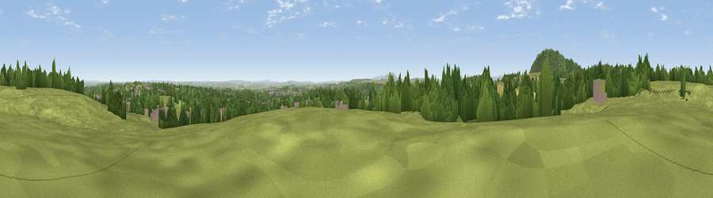

Viewpoint near Little Wenlock
#12847 in England · top 36% of its area beats it · near Little WenlockWhere it is
The exact computed spot (SJ 66275 07825). Click the marker for map links.
The view, rendered

A 360° render of this exact spot computed from the terrain model, tree cover and land cover — summer colours, afternoon light, calibrated against photographs of famous viewpoints. Real trees, hedges and buildings will differ in detail.
The panorama
Grey silhouette: terrain skyline in each direction (720 bearings, Earth curvature and refraction included). Dashed green: skyline with trees (+15 m) and buildings (+8 m) as obstacles. Blue strip: how far the ground is visible on each bearing.
Where the view opens
Wedge length = distance to the farthest visible ground on that bearing (vegetation-aware). Rings at 10, 25 and 50 km.
What fills the view
56% grassland · 27% woodland · 10% cropland · 6% built-up ·
Angular shares of the visible panorama (visual magnitude), not map area. Landscape diversity 0.48 (0–1 Shannon).
Key numbers
More beautiful places nearby
The staircase of upgrades: each row has a higher view potential than everything closer. Driving times are estimates from straight-line distance, calibrated against real road routing — check an actual route before setting out.
| Place | Direction | Drive | Score |
|---|---|---|---|
| The Ercall | NW · 3 km | ~7 min | 79.4 |
| Viewpoint near Little Wenlock | WNW · 3 km | ~7 min | 84.2 |
| The Wrekin | W · 3 km | ~8 min | 85.0 |
| Viewpoint near Little Wenlock | W · 4 km | ~9 min | 86.6 |
| North Hill | S · 62 km | ~85 min | 86.8 |
| Worcestershire Beacon | S · 63 km | ~86 min | 87.1 |
| Viewpoint near West Quantoxhead | SSW · 174 km | ~195 min | 87.9 |
| Viewpoint near West Quantoxhead | SSW · 175 km | ~196 min | 88.7 |
52.66708, -2.50013 · source: screening · position refined by local search. Computed location — check access rights before visiting.